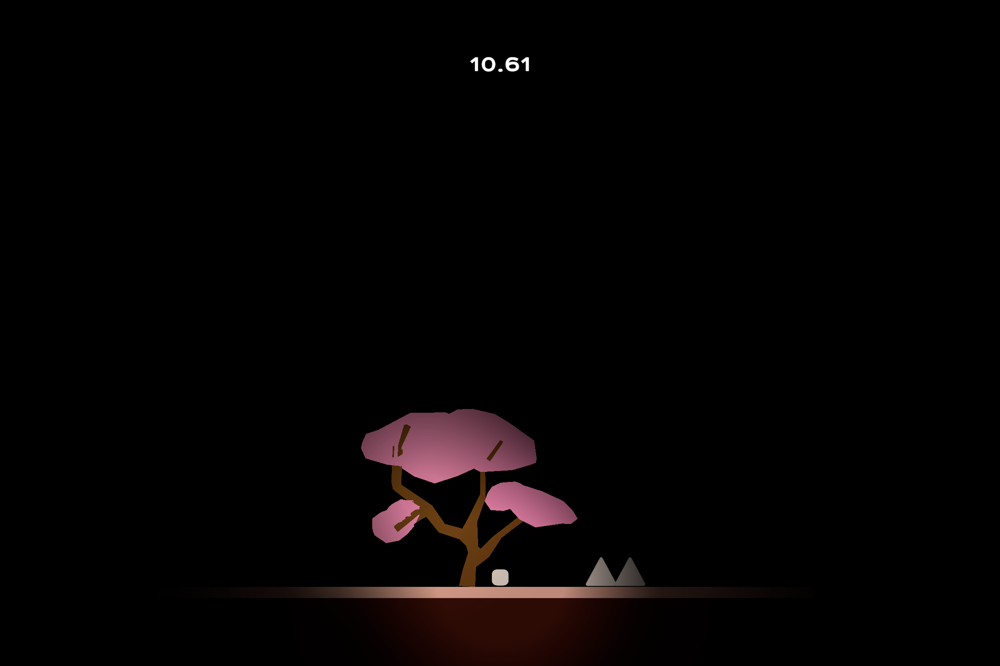

Surface0410
I am 12 years old student and I want to be programmer or web designer. I am Korean however I am living in Australia right now. I can do C++, C#, Html, Unity and Python.


Cherry Ranker
Cherry Ranker is my first Unity project. Cherry Ranker is a flatformer genre and I made it with Unity's URP 2D. I made the basic screen into a dark background and a structure where you can see the characters as they approach, and I added this element because I wanted to give you a sense of exploration. Except for the Cherry Blossom Low Poly model and sound effect light, I made it myself and the music can be used for commercial purposes with my permission (except YouTube or video platforms). This project took a total of two weeks to make, and I'd appreciate it if you enjoyed it! I'm still lacking a lot because it's an alpha version, but I'll add a ranking system later if I have time.